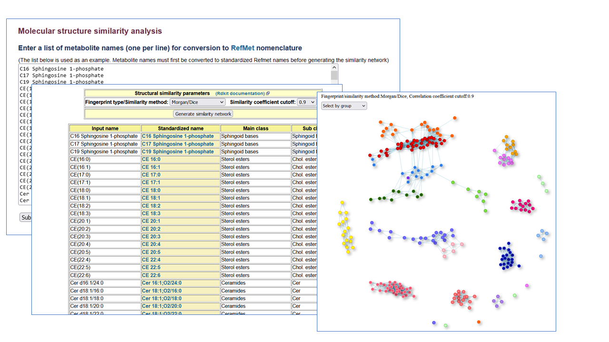
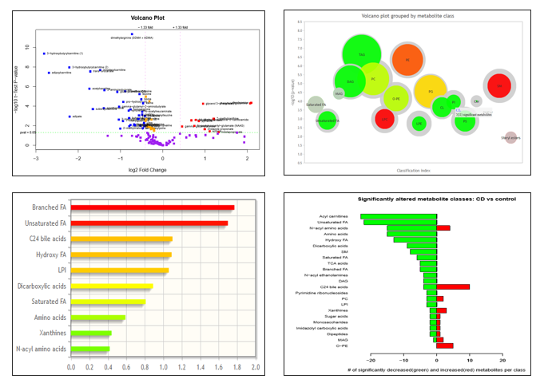

Molecular structure similarity analysis
This Structure similarity network tool creates a network map from a list of metabolite names by selecting a fingerprint type (MACCSkeys, Chem.RDK, Topological, Morgan,MorganBitVector) and similarity method (Tanimoto, Dice) with a similarity coefficient cutoff.
This feature is also implemented for each NMDR study containing named metabolites (in 'Perform statistical analysis' section).
MS/NMR studies identifying named metabolites
Analysis tools may also be accessed from within each study page using the 'Perform statistical analysis' link
Comparative analysis across studies
- Perform meta-analysis on selected studies (compare ratios of 2 selected metabolites)
- Compare list of metabolites in 2 selected studies (all analyses)
- Compare list of metabolites in 2 selected studies (individual analyses)
MS untargeted experiments containing unidentified ions
- Search Untargeted MS data by m/z, retention time, instrumentation
- Superimpose unknown m/z on RefMet mass defect plot
Load and analyze your own dataset
Load and analyze your own dataset by MetENP
UCSD Metabolomics Workbench, a resource sponsored by the Common Fund of the National Institutes of HealthThis repository is under review for potential modification in compliance with Administration directives